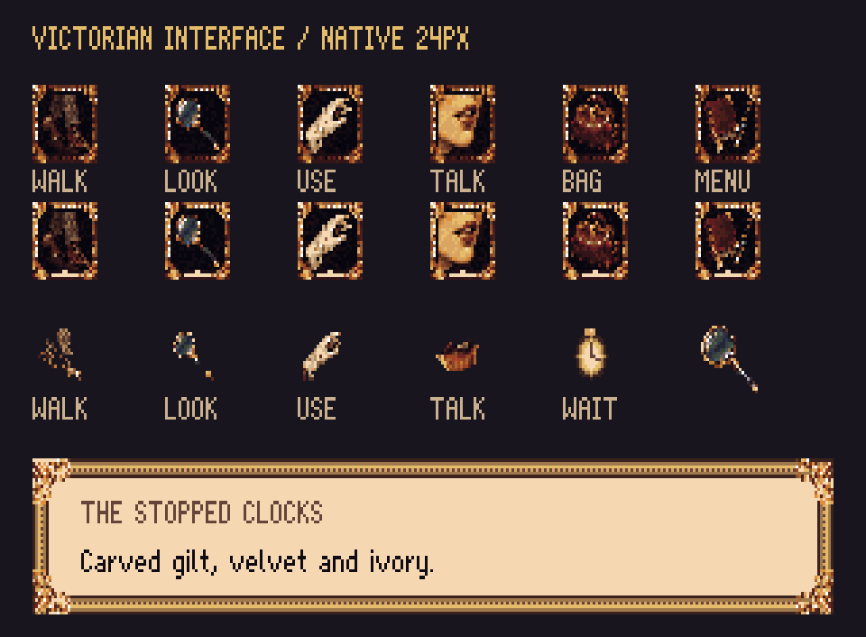
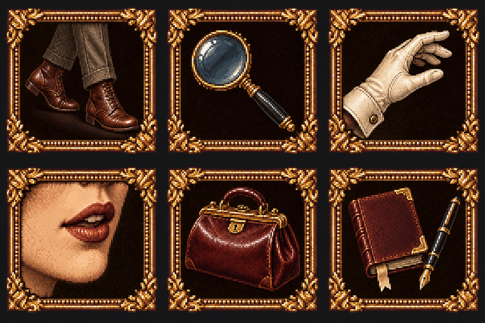

Compare with r20

Gilt leaves and beading from the approved portrait frame, dark velvet button interiors, and painted period objects. These are the actual 24×24 exports, enlarged with nearest-neighbour pixels.
Walk selected. Click a button in the compact toolbar to compare selected states.
The 40-pixel toolbar is an art/layout proposal, not a running game. It requires engine layout work; replacing the icon PNGs alone will not remove the large cream panel.New: serif typography with bold and italic (r26)


The source painting is converted to the shared 64-colour palette. All buttons reuse one bezel; selection changes only the bezel and lower marker. Cursor silhouettes come from the same objects.
Workflow & references · Engine handoff · Review manifest · Editable normal buttons · Editable border